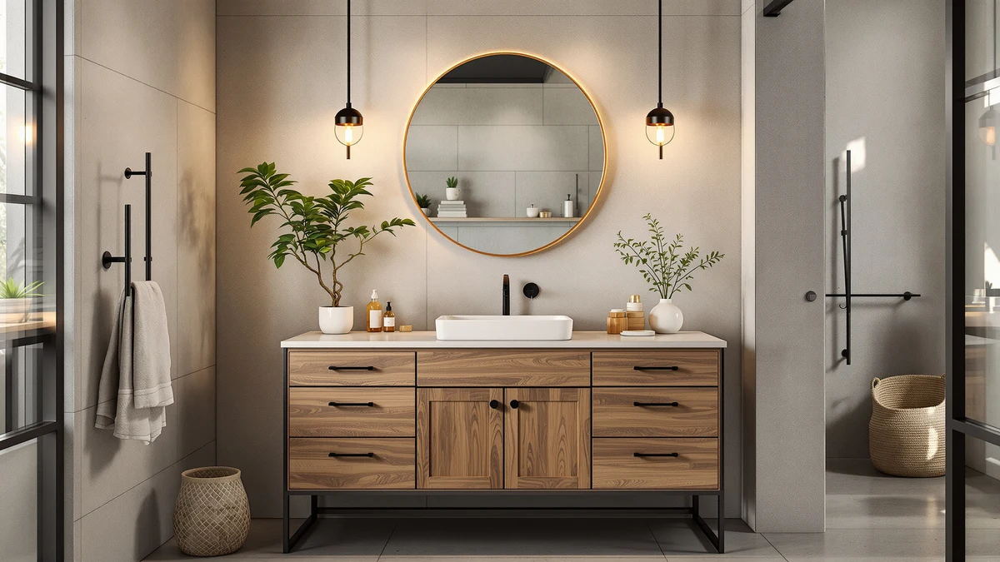

The Best Farmhouse Vanity Tops (2026)
Prices and picks verified as of September 2026. Independent, reader-supported reviews.


Quick Answer
The chartustriable 24 Inch Bathroom Vanity is the best farmhouse vanity top for most bathrooms, pairing a sliding barn-door cabinet with a ceramic sink and three drawers for under $300. If you need more counter space, the AMERLIFE 48" White Farmhouse Double gives two people room to get ready at once, and the VASAGLE LIRY wall cabinet is an affordable way to add matching storage if you're not replacing your whole vanity.
Our pick: chartustriable 24 Inch Bathroom Vanity — $279.99 Check Price on Amazon
Bottom line: our top pick is the chartustriable 24 Inch Bathroom Vanity with Sink & Faucet & at $279.99. The best budget option is the VASAGLE LIRY Collection - Bathroom Wall Cabinet at $52.32.
Things to Know Before You Buy
- Measure your rough-in first. Farmhouse vanities in this guide range from a compact 24 inches up to a double-sink 48 inches, and a few inches of mismatch can rule out a model you like.
- Most "wood" farmhouse vanities are engineered wood. They pair MDF cabinets with a ceramic or acrylic composite sink basin rather than solid hardwood, so check the material line before assuming it's stone or real timber.
- Barn doors look the part but cost you some depth. A sliding barn-door track eats into interior cabinet space compared with hinged doors, so if you need daily drawer access, weigh that against the style.
- These ship in pieces. Expect the cabinet and sink to arrive in two or more boxes with labeled parts and an installation video rather than a single assembled unit.
- Budget $180 to $410 for a single-sink vanity. Wall-mounted accessory cabinets start under $70, and premium double-sink units with soft-close hardware run past $1,000.
The best farmhouse vanity tops combine a shiplap-style or barn-door cabinet, black or bronze hardware, and a ceramic or composite sink into one unit you can install in an afternoon. We compared seven current models across price, size, drawer configuration and verified buyer feedback to find the ones worth your money.
We researched dimensions, materials and verified owner reviews across brands including chartustriable, AMERLIFE, HOPUBUY, DELUXE LIVING and VASAGLE before narrowing the field to seven. The chartustriable 24 Inch Bathroom Vanity came out on top for small and mid-size bathrooms, and the AMERLIFE 48" White Farmhouse Double is our pick if you need a double-sink layout with more counter space.
Farmhouse style has become the default look for bathroom remodels, and vanity brands now use the term as a catch-all label for anything with barn-door panels or a distressed wood-grain finish. Owners report that fit and finish vary at this price point, so we focused on models with clear published dimensions, real drawer storage and enough verified reviews to trust the feedback rather than the marketing copy alone.
Why You Should Trust Us
Ilane Tall covers bathroom fixtures and small-space renovation for Best Bathroom Vanities, including this guide to the best farmhouse vanity tops. She spends her time comparing vanity listings, spec sheets and verified owner reviews so readers can avoid vanities that look great in photos but fall short in a real bathroom. We do not run a fake testing lab, and we do not claim to physically install or own every vanity we cover here. Instead, we compare manufacturer specifications, published materials, dimensions and verified buyer feedback across each listing, and we disclose our affiliate relationship with Amazon on every page.
How We Picked
We started with every farmhouse-style vanity in our product database and filtered out listings with vague material claims or no published dimensions. From there, we compared overall footprint, drawer and cabinet configuration, sink material and price per inch of counter space. We gave extra weight to brands with multiple verified reviews so we weren't relying on manufacturer marketing copy alone, and we made sure the final seven farmhouse vanity tops covered a real range of sizes and budgets, from a $65 wall-mounted cabinet to a $1,099 premium double-drawer vanity.
How We Compared
We compared these seven farmhouse vanity tops head-to-head on four factors: overall footprint, drawer versus cabinet storage, sink material, and price relative to size. Where a listing included a customer rating and review count, we weighed that alongside the spec sheet rather than trusting star ratings on their own. We did not physically install or use any of these vanities; our comparisons rely on manufacturer specifications, current pricing and the patterns we found across verified owner reviews.
Our Picks

chartustriable 24 Inch Bathroom Vanity
What we like
- Sliding barn door plus three handle-less drawers fit a lot of storage into a compact frame
- Ceramic sink and engineered wood cabinet ship with labeled parts and an installation video
- At $279.99 it undercuts most 24-inch vanities that also include a matching mirror
Flaws but not dealbreakers
- The barn door slides on a track that takes up some interior cabinet depth
- Arrives in two separate boxes, so you'll need to coordinate delivery before you start assembly
| Material | MDF / engineered wood |
| Size | 24 Inch |
The chartustriable 24 Inch Bathroom Vanity earns the top spot because it fits the two things most farmhouse-vanity buyers ask for: real storage and a defined style, in a footprint that works for a hallway bath or a small primary bathroom. The cabinet measures 18.3 inches deep by 24 inches wide by 33.3 inches tall, with a 16.5 by 10.6 by 6.9-inch ceramic sink and a 33.9 by 20.1-inch mirror included in the price. A sliding barn door covers the main cabinet, and three handle-less drawers below it hold everyday items without you needing to install extra hardware.
At $279.99, this is one of the least expensive vanities in our comparison that still includes a mirror and a ceramic sink rather than a cheaper acrylic basin. The cabinet and sink ship in two separate packages, and the manufacturer includes labeled parts with an installation video, which matters more than it sounds like at this price point since a lot of flat-pack vanities arrive with vague instructions. The main tradeoff is depth: the barn-door track takes up some of the interior cabinet space you'd get with a standard hinged door, so measure your storage needs before you commit to this style over a drawer-forward layout like the AMERLIFE 48-inch below.

HOPUBUY 36" Bathroom Vanity with
What we like
- Double-door cabinet plus an adjustable shelf with three height options and three side shelves
- Stainless steel hinges and reinforced MDF construction are built for daily use
- At $179.99 it is the least expensive full vanity-with-sink combo in this lineup
Flaws but not dealbreakers
- Hinged double doors read a little less "farmhouse" than the barn-door models here
- Buyers should confirm the 19-inch cabinet depth clears their existing plumbing rough-in
| Material | MDF / engineered wood |
| Size | 36'' |
The HOPUBUY 36-inch vanity is the value pick because it packs more usable storage into its $179.99 price than any other model we compared. The cabinet measures 19 inches deep by 36 inches wide by 34 inches tall, and instead of a single open cavity, it splits storage across a double-door cabinet, an adjustable interior shelf with three height settings, and three extra side shelves. That layout works well for a small bathroom or apartment where you need to keep toiletries, towels and cosmetics separated rather than piled on top of each other.
Construction leans on engineered wood and reinforced MDF with stainless steel hinges, which HOPUBUY positions as built for long-term daily use rather than a one-season fix. Black retro metal handles and barn-style door panels keep the farmhouse look even though the storage mechanism inside is a standard hinged cabinet, not a sliding barn door. If your bathroom rough-in is tight, double-check the 19-inch depth against your existing plumbing before ordering, since that's slightly deeper than some other 36-inch vanities.

AMERLIFE 48" White Farmhouse Double
What we like
- Four drawers plus a double barn-door cabinet and an open shelf cover every storage style
- One-piece acrylic composite sink resists staining and has no seams where water can pool
- 48 inches of width gives two people room to get ready without crowding each other
Flaws but not dealbreakers
- At $399.99 it costs more than double the entry-level 24-inch pick
- A vanity this wide needs a bathroom with the floor space to match, so measure clearance first
| Material | MDF / engineered wood |
| Size | 48“ |
The AMERLIFE 48-inch vanity is built for bathrooms where the vanity has to do more than one job. Four smooth-sliding drawers separate skincare, hair tools and toiletries, a double barn-door cabinet stores bulk supplies like extra towels or cleaning products, and an open shelf on top gives you a spot for baskets. That mix of three storage types in one 48-inch unit is more versatile than most single-sink vanities in this price range.
The countertop uses a seamless one-piece acrylic composite sink with a flow-stone surface that AMERLIFE says resists stains, scratches and discoloration, and the lack of seams means less grime buildup around the basin edge over time. At $399.99, it costs more than the smaller vanities here, and you'll want a full 48 inches of clear wall space plus the floor room to open both cabinet doors. For a primary bathroom that two people share every morning, that tradeoff is worth it.

48" Farmhouse Bathroom Vanity with
What we like
- 47.2-inch-wide cabinet with a sliding barn door and three drawers gives you serious storage for the price
- Included 35.4-inch mirror matches the vanity finish, so you don't have to shop for one separately
- Parts ship labeled with an installation video, the same system used on the smaller chartustriable pick
Flaws but not dealbreakers
- At $409.99 it is priced closer to the mid-tier AMERLIFE 48-inch than to a true budget option
- The single sliding barn door means only one person can access the cabinet at a time
| Material | MDF / engineered wood |
| Size | 48 Inch |
This chartustriable 48-inch vanity is the widest single-sink option in our comparison that still comes in under $410, and it uses the same barn-door-plus-drawers layout as the brand's smaller 24-inch model. The cabinet measures 17.5 inches deep by 47.2 inches wide by 33.3 inches tall, with drawers sized at 19.8 by 13.7 by 7.8 inches and a 35.4 by 21.6-inch mirror included in the price. That mirror is worth factoring in, since a separately purchased 35-inch mirror can run $60 to $100 on its own.
Like the smaller chartustriable vanity, the cabinet and ceramic sink arrive in two labeled packages with an installation video, which keeps assembly manageable for a DIY install. The tradeoff for the extra width is that storage still funnels through a single sliding barn door rather than double doors, so only one person can dig through the cabinet at a time. If you have the wall space for 48 inches but want to stay under $450, this is the more affordable route to that footprint compared with the AMERLIFE double vanity above.

AMERLIFE 36" Farmhouse Bathroom Vanity
What we like
- 4.3 out of 5 stars across 44 verified reviews, the only vanity in this roundup with public rating data
- 36-inch width fits the sweet spot between the compact 24-inch and wider 48-inch options
- Rustic barn-door styling matches the farmhouse category tags on the listing
Flaws but not dealbreakers
- The listing does not publish drawer count or cabinet depth the way the brand's 48-inch model does
- At $319.99 it costs more than both the HOPUBUY and chartustriable alternatives in this size range
| Material | MDF / engineered wood |
| Size | 36 inch |
The AMERLIFE 36-inch vanity is the only product in this comparison with a public star rating, and 4.3 out of 5 across 44 verified reviews gives buyers something more concrete than manufacturer marketing copy to go on. It sits in the 36-inch category, which tends to be the most common vanity size sold for single-sink primary and guest bathrooms, and Amazon tags it under farmhouse, rustic and barn-door styling, consistent with the sliding-door look shared across this list.
Reviewers consistently note the rustic finish and barn-door front as the standouts, which lines up with the category tags AMERLIFE applied to the listing. Where this model comes up short is transparency: unlike its own 48-inch sibling, the 36-inch listing does not publish drawer count, cabinet depth or sink dimensions, so you're relying more on photos and review history than a spec sheet. At $319.99, it costs more than the HOPUBUY 36-inch runner-up, so it makes the most sense for buyers who value the verified rating over saving $140.

DELUXE LIVING 48 Inch White
What we like
- Six drawers plus a cabinet is the most individual storage compartments of any vanity here
- Soft-closing doors prevent slamming and reduce wear on the hinges over years of daily use
- Built from MDF and solid wood with a waterproof-coated surface rather than laminate alone
Flaws but not dealbreakers
- At $1,099.00 it costs nearly four times as much as the chartustriable 24-inch top pick
- That price puts it well outside the budget range most farmhouse-vanity shoppers are working with
| Material | MDF / engineered wood |
| Size | 48 Inch |
The DELUXE LIVING 48-inch vanity is the premium option in this comparison, and the price buys genuinely better construction, not just a bigger cabinet. Six drawers plus a separate cabinet give you more individually organized storage than any other vanity here, and every door on the unit is soft-closing, so it closes gently instead of slamming and puts less wear on the hinges and cabinet frame over years of daily use.
Construction combines MDF with solid wood rather than engineered wood alone, and the surface carries a waterproof coating meant to resist the moisture and humidity a bathroom vanity deals with every day. At $1,099.00, this is not a budget purchase; it's the vanity to buy if you're doing a full bathroom renovation and want hardware that will outlast a builder-grade cabinet by years rather than replacing a $300 vanity again in five years.

VASAGLE LIRY Collection - Bathroom
What we like
- At $64.99 it costs a fraction of every full vanity in this comparison
- Two-layer enclosed storage plus an open compartment, a towel bar and four hooks in one wall unit
- Adjustable interior shelf with three height options fits both tall and short bottles
Flaws but not dealbreakers
- This is a wall-mounted storage cabinet, not a full vanity with a sink, so it won't replace your existing sink and countertop
- At 7.9 inches deep by 23.6 inches wide by 28.7 inches tall, it holds accessories rather than serving as your main vanity
| Material | MDF / engineered wood |
| Size | 7.9"D x 23.6"W x 28.7"H |
The VASAGLE LIRY cabinet is not a vanity top in the way the other six products here are. It's a wall-mounted storage cabinet from VASAGLE's farmhouse-inspired LIRY collection, and we included it because it's the most affordable way to add matching farmhouse style to a bathroom where you're not ready to replace the whole vanity. At 7.9 inches deep, 23.6 inches wide and 28.7 inches tall, it mounts beside or above an existing sink rather than under one.
Inside, you get two-layer enclosed storage, an open compartment, a towel bar and four hooks, plus an adjustable interior shelf with three height settings so it works for both tall bottles and short jars. At $64.99, it's priced for buyers who want the barn-door, rustic-white look to carry across the whole bathroom without spending $200-plus on a matching vanity. Don't confuse it with a sink-ready vanity top when comparing prices: it's an accessory piece, not a replacement for one.
Quick Comparison
| Product | Material | Price | Rating | Best for | Get it |
|---|---|---|---|---|---|
| chartustriable 24 Inch Bathroom Vanity | MDF / engineered wood | $279.99 | 4 | Small bathrooms | View on Amazon → |
| HOPUBUY 36" Bathroom Vanity with | MDF / engineered wood | $179.99 | 4 | Best value | View on Amazon → |
| AMERLIFE 48" White Farmhouse Double | MDF / engineered wood | $399.99 | 4 | Double-sink bathrooms | View on Amazon → |
| 48" Farmhouse Bathroom Vanity with | MDF / engineered wood | $409.99 | 4 | 48-inch on a budget | View on Amazon → |
| AMERLIFE 36" Farmhouse Bathroom Vanity | MDF / engineered wood | $319.99 | 4.3 | Best reviewed | View on Amazon → |
| DELUXE LIVING 48 Inch White | MDF / engineered wood | $1,099.00 | 4 | Premium upgrade | View on Amazon → |
| VASAGLE LIRY Collection - Bathroom | MDF / engineered wood | $64.99 | 4 | Add-on storage | View on Amazon → |
What's the difference between a farmhouse vanity top and a regular bathroom vanity?
A farmhouse vanity top typically pairs a shiplap or barn-door style cabinet with black or oil-rubbed bronze hardware and a simple ceramic or composite sink, while a standard vanity can use any door style or finish.
Can I install a farmhouse vanity top myself?
Most of the vanities in this guide ship in two or more boxes, with the cabinet and sink packaged separately, and include labeled parts and an installation video.
The Competition
We looked at several other farmhouse-style vanities before settling on this list. The DELUXE LIVING 60 Inch Bathroom Vanity offers the same soft-close hardware and solid wood construction as our premium DELUXE LIVING pick, but at $1,229.99 for a 60-inch footprint, it's a bigger commitment than most bathrooms need once a 48-inch soft-close option is already on this list. The Bellemave 48-inch vanity came in at $429.80 with a navy blue finish that reads more coastal than farmhouse, so we left it out in favor of vanities with a clearer barn-door or shiplap identity. The YOPTO 36-inch vanity, priced at $369.99, covers the same 36-inch category as our AMERLIFE pick but has no verified review history to weigh against the spec sheet, so we couldn't confirm real-world durability. The SOLIDEE 24-inch vanity uses a pedestal base with a white ceramic vessel sink rather than an enclosed cabinet, which trades away the drawer and cabinet storage that most farmhouse-vanity shoppers are looking for in the first place.
Across all seven, the chartustriable 24 Inch Bathroom Vanity remains our top pick among the best farmhouse vanity tops for most bathrooms, since it pairs a genuine ceramic sink and mirror with real drawer storage at a price that undercuts nearly everything else on this list.
Frequently Asked Questions
What's the difference between a farmhouse vanity top and a regular bathroom vanity?
A farmhouse vanity top typically pairs a shiplap or barn-door style cabinet with black or oil-rubbed bronze hardware and a simple ceramic or composite sink, while a standard vanity can use any door style or finish. The construction underneath, usually engineered wood or MDF with a ceramic or acrylic sink basin, is often the same across both styles. The visual details, like sliding barn doors, vintage wood-grain finishes and farmhouse-style pulls, are what set these seven vanities apart from a plain modern cabinet.
Can I install a farmhouse vanity top myself?
Most of the vanities in this guide ship in two or more boxes, with the cabinet and sink packaged separately, and include labeled parts and an installation video. If you're comfortable with basic plumbing connections and have a helper to lift the sink into place, a single-sink vanity like the chartustriable 24-inch pick is a reasonable weekend DIY project. Wider double-sink units, like the AMERLIFE 48-inch, are heavier and benefit from a second set of hands or a professional installer.
How much should I expect to spend on a farmhouse vanity top?
Prices among the models we compared range from about $65 for a wall-mounted accessory cabinet up to $1,099 for a premium 48-inch vanity with soft-close hardware and solid wood construction. A reasonable mid-range budget for a single-sink 24 to 36-inch vanity with a mirror included sits between $270 and $410, while a full double-sink 48-inch vanity typically runs $400 to $1,100 depending on materials.